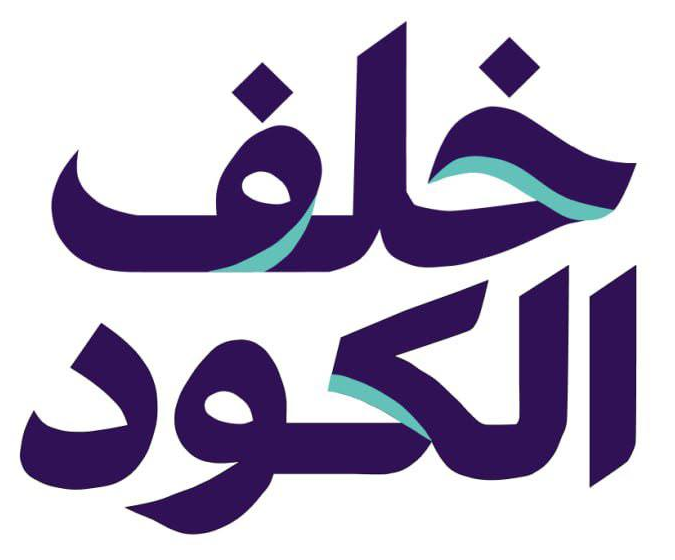
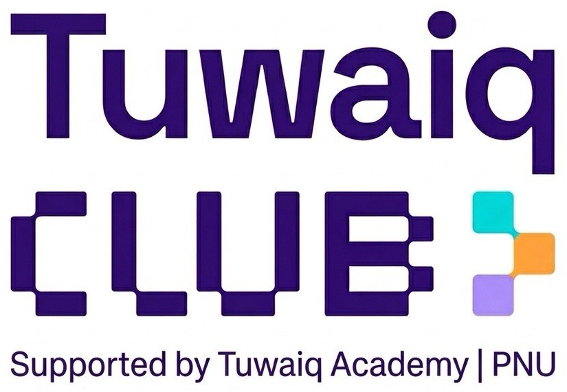

بطاقة قرار01 / 08
هل الفايب كودينج مناسب هنا؟
↔ اسحب البطاقة أو اختر بالأسفل
اكتملت الجولة
كل قرار… فهم أعمق.
الفكرة البسيطة بداية مناسبة.
وكلما زادت المخاطر، احتجت فهمًا ومراجعة واختبارًا متخصصًا.


مو كل فكرة تحتاج نفس الطريقة.
اقرأ الموقف… وخذ قرارك.
هل الفايب كودينج مناسب هنا؟
الفكرة البسيطة بداية مناسبة.
وكلما زادت المخاطر، احتجت فهمًا ومراجعة واختبارًا متخصصًا.
«مناسب» يعني وسيلة تساعدك، مع تجربة النتيجة ومراجعتها.